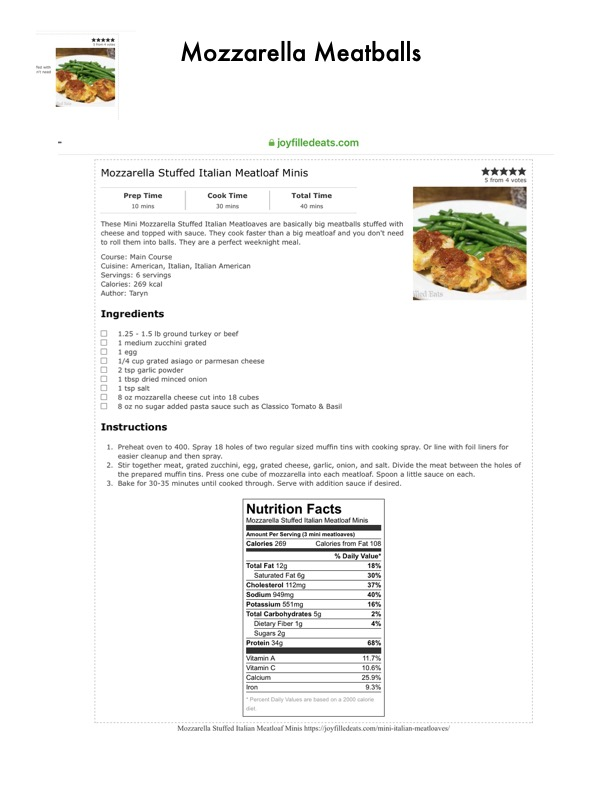

Mozzarella Meatballs

Original cookbook page 31
Ingredients
- 1.25 - 1.5 Ib ground turkey or beef
- 1 medium zucchini grated
- 1egg
- 1/4 cup grated asiago or parmesan cheese
- 2 tsp garlic powder
- 1 tbsp dried minced onion
- 1 tsp salt
- 8 oz mozzarella cheese cut into 18 cubes
- 8 oz no sugar added pasta sauce such as Classico Tomato & Basil
Instructions
- Mozzarella Meatballs
- Preheat oven to 400. Spray 18 holes of two regular sized muffin tins with cooking spray. Or line easier cleanup and then spray.
- Stir together meat, grated zucchini, egg, grated cheese, garlic, onion, and salt. Divide the meat the prepared muffin tins. Press one cube of mozzarella into each meatloaf. Spoon a little sauce
Recipe #31 from collection